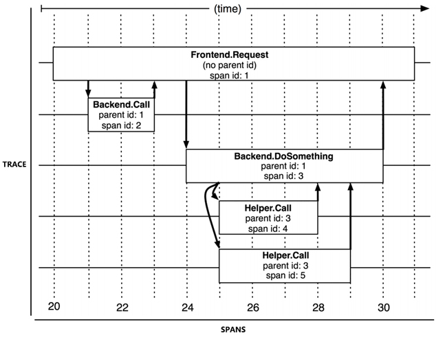
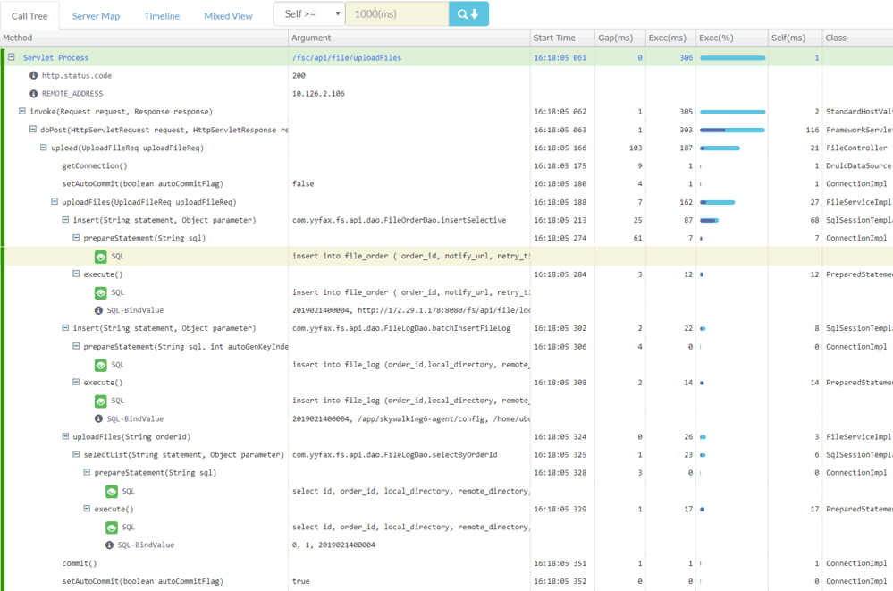
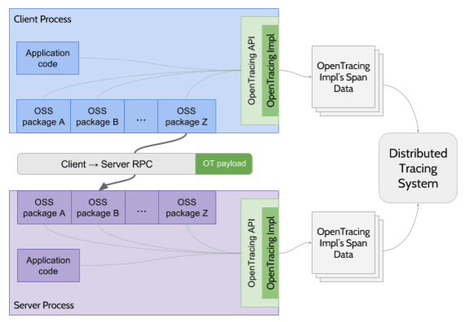

- 00 _导读 _ 什么是“The Fenix Project”？.md
- 00 开篇词 _ 如何构建一个可靠的分布式系统？.md
- 01 _ 原始分布式时代：Unix设计哲学下的服务探索.md
- 02 _ 单体系统时代：应用最广泛的架构风格.md
- 03 _ SOA时代：成功理论与失败实践.md
- 04 _ 微服务时代：SOA的革命者.md
- 05 _ 后微服务时代：跨越软件与硬件之间的界限.md
- 06 _ 无服务时代：“不分布式”云端系统的起点.md
- 07 _ 远程服务调用（上）：从本地方法到远程方法的桥梁.md
- 08 _ 远程服务调用（下）：如何选择适合自己的RPC框架？.md
- 09 _ RESTful服务（上）：从面向过程编程到面向资源编程.md
- 10 _ RESTful服务（下）：如何评价服务是否RESTful？.md
- 11 _ 本地事务如何实现原子性和持久性？.md
- 12 _ 本地事务如何实现隔离性？.md
- 13 _ 全局事务和共享事务是如何实现的？.md
- 14 _ 分布式事务之可靠消息队列.md
- 15 _ 分布式事务之TCC与SAGA.md
- 16 _ 域名解析系统，优化HTTP性能的第一步.md
- 17 _ 客户端缓存是如何帮助服务器分担流量的？.md
- 18 _ 传输链路，优化HTTP传输速度的小技巧.md
- 19 _ 如何利用内容分发网络来提高网络性能？.md
- 20 _ 常见的四层负载均衡的工作模式是怎样的？.md
- 21 _ 服务端缓存的三种属性.md
- 22 _ 分布式缓存如何与本地缓存配合，提高系统性能？.md
- 23 _ 认证：系统如何正确分辨操作用户的真实身份？.md
- 24 _ 授权（上）：系统如何确保授权的过程可靠？.md
- 25 _ 授权（下）：系统如何确保授权的结果可控？.md
- 26 _ 凭证：系统如何保证与用户之间的承诺是准确完整且不可抵赖的？.md
- 27 _ 保密：系统如何保证敏感数据无法被内外部人员窃取滥用？.md
- 28 _ 传输（上）：传输安全的基础，摘要、加密与签名.md
- 29 _ 传输（下）：数字证书与传输安全层.md
- 30 _ 验证：系统如何确保提交给服务的数据是安全的？.md
- 31 _ 分布式共识（上）：想用好分布式框架，先学会Paxos算法吧.md
- 32 _ 分布式共识（下）：Multi Paxos、Raft与Gossip，分布式领域的基石.md
- 33 _ 服务发现如何做到持续维护服务地址在动态运维中的时效性？.md
- 34 _ 路由凭什么作为微服务网关的基础职能？.md
- 35 _ 如何在客户端实现服务的负载均衡？.md
- 36 _ 面对程序故障，我们该做些什么？.md
- 37 _ 要实现某种容错策略，我们该怎么做？.md
- 38 _ 限流的目标与模式.md
- 39 _ 如何构建零信任网络安全？.md
- 40 _ 如何实现零信任网络下安全的服务访问？.md
- 41 _ 分布式架构中的可观测到底说的是什么？.md
- 42 _ 分析日志真的没那么简单.md
- 43 _ 一个完整的分布式追踪系统是什么样子的？.md
- 44 _ 聚合度量能给我们解决什么问题？.md
- 45 _ 模块导学：从微服务到云原生.md
- 46 _ 容器的崛起（上）：文件、访问、资源的隔离.md
- 47 _ 容器的崛起（下）：系统、应用、集群的封装.md
- 48 _ 以容器构建系统（上）：隔离与协作.md
- 49 _ 以容器构建系统（下）：韧性与弹性.md
- 50 _ 应用为中心的封装（上）：Kustomize与Helm.md
- 51 _ 应用为中心的封装（下）：Operator与OAM.md
- 52 _ Linux网络虚拟化（上）：信息是如何通过网络传输被另一个程序接收到的？.md
- 53 _ Linux网络虚拟化（下）：Docker所提供的容器通讯方案有哪些？.md
- 54 _ 容器网络与生态：与CNM竞争过后的CNI下的网络插件生态.md
- 55 _ 谈谈Kubernetes的存储设计理念.md
- 56 _ Kubernetes存储扩展架构：一个真实的存储系统如何接入或移除新存储设备？.md
- 57 _ Kubernetes存储生态系统：几种有代表性的CSI存储插件的实现.md
- 58 _ Kubernetes的资源模型与调度器设计.md
- 59 _ 透明通讯的涅槃（上）：通讯的成本.md
- 60 _ 透明通讯的涅槃（下）：控制平面与数据平面.md
- 61 _ 服务网格与生态：聊聊服务网格的两项标准规范.md
- 63 _ 基于Spring Boot的单体架构.md
- 64 _ 基于Spring Cloud的微服务架构.md
- 65 _ 基于Kubernetes的微服务架构.md
- 66 _ 基于Istio的服务网格架构.md
- 67 _ 基于云计算的无服务架构.md
- 春节特别放送（上）_ 有的放矢，事半功倍.md
- 春节特别放送（下）_ 积累沉淀，知行合一.md
- 用户故事 _ 詹应达：持续成长，不惧未来.md
- 结束语 _ 程序员之路.md
- 结课测试 _ 一套习题，测出你的掌握程度.md
43 _ 一个完整的分布式追踪系统是什么样子的？
你好，我是周志明。这节课我们来讨论链路追踪的话题。
虽然在2010年之前，就已经有了X-Trace、Magpie等跨服务的追踪系统了，但现代分布式链路追踪公认的起源，是Google在2010年发表的论文《Dapper : a Large-Scale Distributed Systems Tracing Infrastructure》，这篇论文介绍了Google从2004年开始使用的分布式追踪系统Dapper的实现原理。
此后，所有业界有名的追踪系统，无论是国外Twitter的Zipkin、Naver的Pinpoint（Naver是Line的母公司，Pinpoint的出现其实早于Dapper论文的发表，在Dapper论文中还提到了Pinpoint），还是国内阿里的鹰眼、大众点评的CAT、个人开源的SkyWalking（后来进入Apache基金会孵化毕业），都受到了Dapper论文的直接影响。
那么，从广义上讲，一个完整的分布式追踪系统，应该由数据收集、数据存储和数据展示三个相对独立的子系统构成；而从狭义上讲，则就只是特指链路追踪数据的收集部分。比如Spring Cloud Sleuth就属于狭义的追踪系统，通常会搭配Zipkin作为数据展示，搭配Elasticsearch作为数据存储来组合使用。
而前面提到的那些Dapper的徒子徒孙们，就大多都属于广义的追踪系统，它们通常也被称为“APM系统”（Application Performance Management，应用性能管理）。
追踪与跨度
为了有效地进行分布式追踪，Dapper提出了“追踪”与“跨度”两个概念。
从客户端发起请求抵达系统的边界开始，记录请求流经的每一个服务，直到向客户端返回响应为止，这整个过程就叫做一次“追踪”（Trace，为了不产生混淆，我后面就直接使用英文Trace来指代了）。
由于每次Trace都可能会调用数量不定、坐标不定的多个服务，那么为了能够记录具体调用了哪些服务，以及调用的顺序、开始时点、执行时长等信息，每次开始调用服务前，系统都要先埋入一个调用记录，这个记录就叫做一个“跨度”（Span）。
Span的数据结构应该足够简单，以便于能放在日志或者网络协议的报文头里；也应该足够完备，起码要含有时间戳、起止时间、Trace的ID、当前Span的ID、父Span的ID等能够满足追踪需要的信息。
事实上，每一次Trace都是由若干个有顺序、有层级关系的Span所组成一颗“追踪树”（Trace Tree），如下图所示：

Trace和Spans（图片来源于Dapper论文）
那么这样来看，我们就可以从下面两个角度来观察分布式追踪的特征：
从目标来看，链路追踪的目的是为排查故障和分析性能提供数据支持，系统在对外提供服务的过程中，持续地接受请求并处理响应，同时持续地生成Trace，按次序整理好Trace中每一个Span所记录的调用关系，就能绘制出一幅系统的服务调用拓扑图了。
这样，根据拓扑图中Span记录的时间信息和响应结果（正常或异常返回），我们就可以定位到缓慢或者出错的服务；然后，将Trace与历史记录进行对比统计，就可以从系统整体层面分析服务性能，定位性能优化的目标。
从实现来看，为每次服务调用记录Trace和Span，并以此构成追踪树结构，看起来好像也不是很复杂。然而考虑到实际情况，追踪系统在功能性和非功能性上都有不小的挑战。
功能上的挑战来源于服务的异构性，各个服务可能会采用不同的程序语言，服务间的交互也可能会采用不同的网络协议，每兼容一种场景，都会增加功能实现方面的工作量。
而非功能性的挑战，具体就来源于以下这四个方面：
- 低性能损耗：分布式追踪不能对服务本身产生明显的性能负担。追踪的主要目的之一就是为了寻找性能缺陷，越慢的服务就越是需要追踪，所以工作场景都是性能敏感的地方。
- 对应用透明：追踪系统通常是运维期才事后加入的系统，所以应该尽量以非侵入或者少侵入的方式来实现追踪，对开发人员做到透明化。
- 随应用扩缩：现代的分布式服务集群都有根据流量压力自动扩缩的能力，这就要求当业务系统扩缩时，追踪系统也能自动跟随，不需要运维人员人工参与。
- 持续的监控：即要求追踪系统必须能够7x24小时工作，否则就难以定位到系统偶尔抖动的行为。
所以总而言之，分布式追踪的主要需求是如何围绕着一个服务调用过程中的Trace和Span，来低损耗、高透明度地收集信息，不管是狭义还是广义的链路追踪系统，都要包含数据收集的工作，这是可以说是追踪系统的核心。那么接下来，我们就来了解下三种主流的数据收集方式。
数据收集的三种主流实现方式
目前，追踪系统根据数据收集方式的差异，可以分为三种主流的实现方式，分别是基于日志的追踪（Log-Based Tracing），基于服务的追踪（Service-Based Tracing）和基于边车代理的追踪（Sidecar-Based Tracing）。
基于日志的追踪
基于日志的追踪思路是将Trace、Span等信息直接输出到应用日志中，然后随着所有节点的日志归集过程汇聚到一起，再从全局日志信息中反推出完整的调用链拓扑关系。日志追踪对网络消息完全没有侵入性，对应用程序只有很少量的侵入性，对性能的影响也非常低。
但这种实现方式的缺点是直接依赖于日志归集过程，日志本身不追求绝对的连续与一致，这就导致了基于日志的追踪，往往不如其他两种追踪实现来的精准。
还有一个问题是，由于业务服务的调用与日志的归集并不是同时完成的，也通常不由同一个进程完成，有可能发生业务调用已经顺利结束了，但由于日志归集不及时或者精度丢失，导致日志出现延迟或缺失记录，进而产生追踪失真的情况。这也正是我在上节课介绍Elastic Stack时提到的观点，ELK在日志、追踪和度量方面都可以发挥作用，这对中小型应用确实能起到一定的便利作用，但对于大型系统来说，最好还是由专业的工具来做专业的事。
日志追踪的代表产品是Spring Cloud Sleuth，下面是一段由Sleuth在调用时自动生成的日志记录，你可以从中观察到TraceID、SpanID、父SpanID等追踪信息。
# 以下为调用端的日志输出：
Created new Feign span [Trace: cbe97e67ce162943, Span: bb1798f7a7c9c142, Parent: cbe97e67ce162943, exportable:false]
2019-06-30 09:43:24.022 [http-nio-9010-exec-8] DEBUG o.s.c.s.i.web.client.feign.TraceFeignClient - The modified request equals GET http://localhost:9001/product/findAll HTTP/1.1
X-B3-ParentSpanId: cbe97e67ce162943
X-B3-Sampled: 0
X-B3-TraceId: cbe97e67ce162943
X-Span-Name: http:/product/findAll
X-B3-SpanId: bb1798f7a7c9c142
# 以下为服务端的日志输出：
[findAll] to a span [Trace: cbe97e67ce162943, Span: bb1798f7a7c9c142, Parent: cbe97e67ce162943, exportable:false]
Adding a class tag with value [ProductController] to a span [Trace: cbe97e67ce162943, Span: bb1798f7a7c9c142, Parent: cbe97e67ce162943, exportable:false]
基于服务的追踪
基于服务的追踪是目前最为常见的追踪实现方式，被Zipkin、SkyWalking、Pinpoint等主流追踪系统广泛采用。服务追踪的实现思路是通过某些手段给目标应用注入追踪探针（Probe），比如针对Java应用，一般就是通过Java Agent注入的。
探针在结构上可以看作是一个寄生在目标服务身上的小型微服务系统，它一般会有自己专用的服务注册、心跳检测等功能，有专门的数据收集协议，可以把从目标系统中监控得到的服务调用信息，通过另一次独立的HTTP或者RPC请求，发送给追踪系统。
因此，基于服务的追踪会比基于日志的追踪消耗更多的资源，也具有更强的侵入性，而换来的收益就是追踪的精确性与稳定性都有所保证，不必再依靠日志归集来传输追踪数据。
这里我放了一张Pinpoint的追踪效果截图，从图中可以看到参数、变量等相当详细的方法级调用信息。不知道你还记不记得，在上节课“日志分析”里，我把“打印追踪诊断信息”列为了反模式，并提到，如果需要诊断方法参数、返回值、上下文信息，或者方法调用耗时这类数据，通过追踪系统来实现，会是比通过日志系统实现更加恰当的解决方案。

另外，我也必须给你说明清楚，像图例中的Pinpoint这种详细程度的追踪，对应用系统的性能压力是相当大的，一般仅在除错时开启，而且Pinpoint本身就是比较重负载的系统（运行它必须先维护一套HBase），这其实就严重制约了它的适用范围。目前服务追踪的其中一个发展趋势是轻量化，国产的SkyWalking正是这方面的佼佼者。
基于边车代理的追踪
基于边车代理的追踪是服务网格的专属方案，也是最理想的分布式追踪模型，它对应用完全透明，无论是日志还是服务本身，都不会有任何变化；它与程序语言无关，无论应用是采用什么编程语言来实现的，只要它还是通过网络（HTTP或者gRPC）来访问服务，就可以被追踪到；它也有自己独立的数据通道，追踪数据通过控制平面进行上报，避免了追踪对程序通信或者日志归集的依赖和干扰，保证了最佳的精确性。
而如果要说这种追踪实现方式还有什么缺点的话，那就是服务网格现在还不够普及。当然未来随着云原生的发展，相信它会成为追踪系统的主流实现方式之一。
还有一点就是，边车代理本身对应用透明的工作原理，决定了它只能实现服务调用层面的追踪，像前面Pinpoint截图那样的本地方法调用级别的追踪诊断，边车代理是做不到的。
现在，市场占有率最高的边车代理Envoy就提供了相对完善的追踪功能，但没有提供自己的界面端和存储端，所以Envoy和Sleuth一样，都属于狭义的追踪系统，需要配合专门的UI与存储来使用。SkyWalking、Zipkin、Jaeger、LightStep Tracing等系统，现在都可以接受来自于Envoy的追踪数据，充当它的界面端。
不过，虽然链路追踪在数据的收集这方面，已经有了几种主流的实现方式，但各种追踪产品通常并不互通。接下来我们就具体看看追踪在行业标准与规范方面存在的问题。
追踪规范化
要知道，比起日志与度量，追踪这个领域的产品竞争要相对激烈得多。
一方面，在这个领域内目前还没有像日志、度量那样出现具有明显统治力的产品，仍处于群雄混战的状态。另一方面，现在几乎市面上所有的追踪系统，都是以Dapper的论文为原型发展出来的，基本都算是同门师兄弟，在功能上并没有太本质的差距，却又受制于实现细节，彼此互斥，很难搭配工作。
之所以出现这种局面，我觉得只能怪当初Google发表的Dapper只是论文，而不是有约束力的规范标准，它只提供了思路，并没有规定细节。比如该怎样进行埋点、Span上下文具体该有什么数据结构、怎样设计追踪系统与探针或者界面端的API接口，等等，这些都没有权威的规定。
因此，为了推进追踪领域的产品标准化，2016年11月，CNCF技术委员会接受了OpenTracing作为基金会的第三个项目。OpenTracing是一套与平台无关、与厂商无关、与语言无关的追踪协议规范，只要遵循OpenTracing规范，任何公司的追踪探针、存储、界面都可以随时切换，也可以相互搭配使用。
在操作层面，OpenTracing只是制定了一个很薄的标准化层，位于应用程序与追踪系统之间，这样，探针与追踪系统只要都支持OpenTracing协议，就算它们不是同一个厂商的产品，那也可以互相通讯。此外，OpenTracing还规定了微服务之间在发生调用时，应该如何传递Span信息（OpenTracing Payload）。
关于这几点，我们具体可以参考下图例中的绿色部分：

如此一来，在OpenTracing规范公布后，几乎所有业界有名的追踪系统，比如Zipkin、Jaeger、SkyWalking等，都很快宣布支持OpenTracing。
但谁也没想到的是，Google自己却在这个时候出来表示反对，并提出了与OpenTracing目标类似的OpenCensus规范，随后又得到了巨头Microsoft的支持和参与。
OpenCensus不仅涉及到追踪，还把指标度量也纳入了进来；而在内容上，它不仅涉及到规范制定，还把数据采集的探针和收集器都一起以SDK（目前支持五种语言）的形式提供出来了。
这样，OpenTracing和OpenCensus就迅速形成了可观测性的两大阵营，一边是在这方面深耕多年的众多老牌APM系统厂商，另一边是分布式追踪概念的提出者Google，以及与Google同样庞大的Microsoft。
所以，对追踪系统的规范化工作，也并没有平息厂商竞争的混乱，反倒是把水搅得更浑了。
不过，正当群众们买好西瓜搬好板凳的时候，2019年，OpenTracing和OpenCensus又忽然宣布握手言和，它们共同发布了可观测性的终极解决方案OpenTelemetry，并宣布会各自冻结OpenTracing和OpenCensus的发展。
OpenTelemetry的野心很大，它不仅包括了追踪规范，还包括了日志和度量方面的规范、各种语言的SDK，以及采集系统的参考实现。距离一个完整的追踪与度量系统，只是差了一个界面端和指标预警这些会与用户直接接触的后端功能，OpenTelemetry“大度”地把它们留给具体产品去实现，勉强算是没有对一众APM厂商赶尽杀绝，留了一条活路。
可以说，OpenTelemetry一诞生就带着无比炫目的光环，直接进入CNCF的孵化项目，它的目标是统一追踪、度量和日志三大领域（目前主要关注的是追踪和度量，在日志方面，官方表示将放到下一阶段再去处理）。不过，OpenTelemetry毕竟是2019年才出现的新生事物，尽管背景渊源深厚，前途光明，但未来究竟如何发展，能否打败现在已有的众多成熟系统，目前仍然言之尚早。
小结
这节课，我给你介绍了分布式追踪里“追踪”与“跨度”两个概念，要知道目前几乎所有的追踪工具都是围绕这两个Dapper提出的概念所设计的，因此理解它们的含义，对你使用任何一款追踪工具都会有帮助。
而在理论之外，我还讲解了三种追踪数据收集的实现方式，分别是基于日志、基于服务、基于边车代理的追踪，你可以重点关注下这几种方式各自的优势和缺点，以此在工作实践中选择合适的追踪方式。
一课一思
在你所负责的产品中，有引入链路追踪工具吗？如果有，是哪一款？达到你的期望了吗？如果没有，你是如何解决应用运行过程中的除错、性能分析等问题的呢？
欢迎在留言区分享你的答案。如果觉得有收获，也欢迎你把今天的内容分享给其他的朋友。感谢你的阅读，我们下一讲再见。
© 2019 - 2023 Liangliang Lee. Powered by gin and hexo-theme-book.